Sokhina. Jamdani, protidin.
A clothing brand that buys handwoven Jamdani from Rupganj weavers and tailors it into modern wear for men and women: everyday pieces, akdh sets, biye bari outfits and a signature koti.
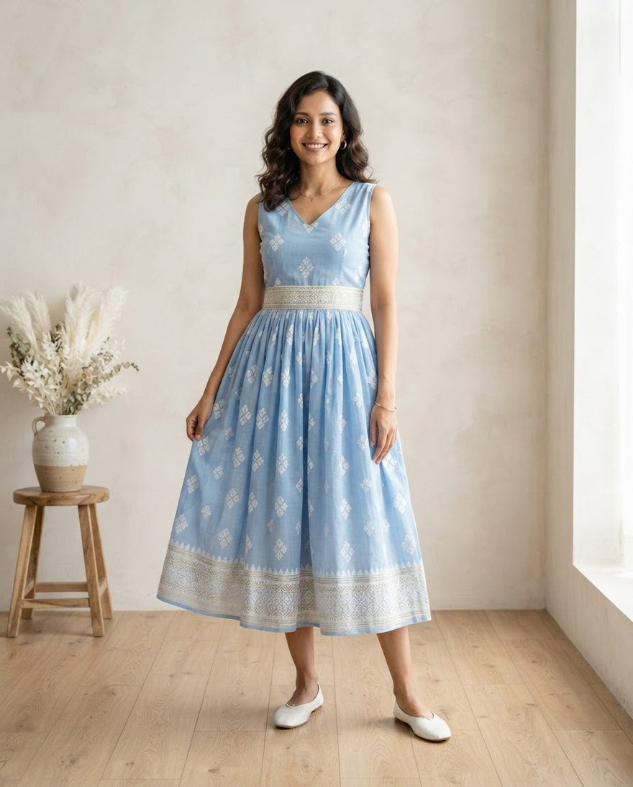
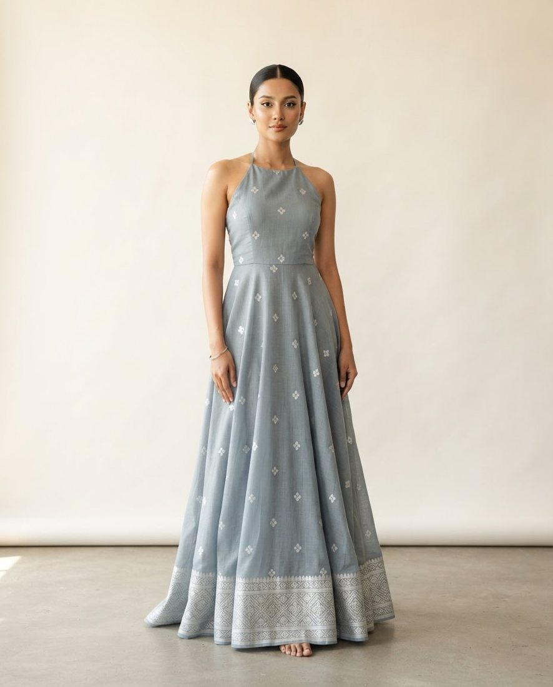
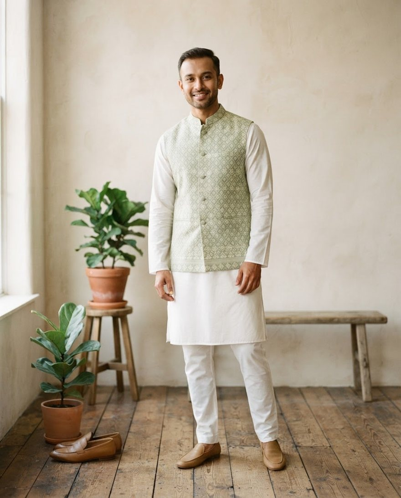
Jamdani is woven by hand, motif by motif, and one saree can take weeks or months. UNESCO lists the craft as intangible cultural heritage, and it carries Bangladesh's geographical indication.
Yet it is sold in almost one shape, the saree, and worn a few times a year. Men have almost no way to wear it. Younger buyers find it too formal and too delicate. The weaver depends on a customer who buys once every few years.
The fabric has plenty of admirers. It needs more shapes and more occasions.
Sokhina is one of the most familiar women's names in rural Bangladesh. It is the name of the woman at the loom. It is the name of Birangona Sokhina, the heroine of the old Mymensingh ballad. And inside it is the word sokhi, a close friend.
For years the name has been used as a joke about village women. Putting it on the finest cloth in the country is the statement. People will stop, smile, and ask why, and the answer is our whole story.
Jamdani, protidin.
Campaign line: Almari khulo. Buti stays as the name of our logo mark and of the signature koti.
| Name | Stops the scroll | Tells the story | Feels premium | Easy to say | Ownable | Total |
|---|---|---|---|---|---|---|
| Sokhina | 5 | 5 | 3 | 5 | 4 | 22 |
| Buti | 3 | 4 | 4 | 5 | 2 | 18 |
| Maku | 4 | 3 | 3 | 5 | 3 | 18 |
| Shitalakshya | 2 | 5 | 5 | 2 | 4 | 18 |
| Tana-Poren | 3 | 4 | 4 | 3 | 3 | 17 |
Scores are my judgement, out of 5. Feels premium is where Sokhina is weakest, so the design has to carry it: soft colour, quiet motifs and a lot of white space. Buti scores low on ownable because it is a common textile word across Bengal.
Before you print anything: check the name at RJSC and the trademark office (DPDT), and that the Facebook, Instagram and .com.bd names are free. If Sokhina is a real weaver you work with, get her written consent and agree what she receives. If she is not, say openly that the name stands for every weaver.
Everyday wear for the office, campus and weekend.
Eid, Boishakh, Falgun, Ekushey, Puja and the holud.
Akdh, reception and bridal, plus matching sets for the family.
Children's pieces cut from the same cloth as the parents'.
The box is the first thing a customer touches and the thing they post. One for every order, one for gifts, one to keep.
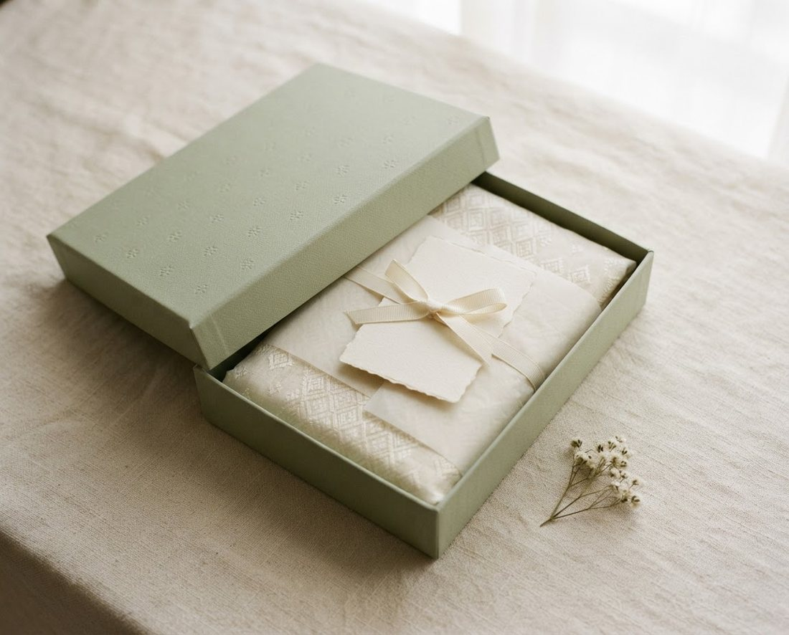
Every orderThe sage boxMatte sage with a buti pressed into the lid, ivory tissue, a slim ribbon and the weaver card.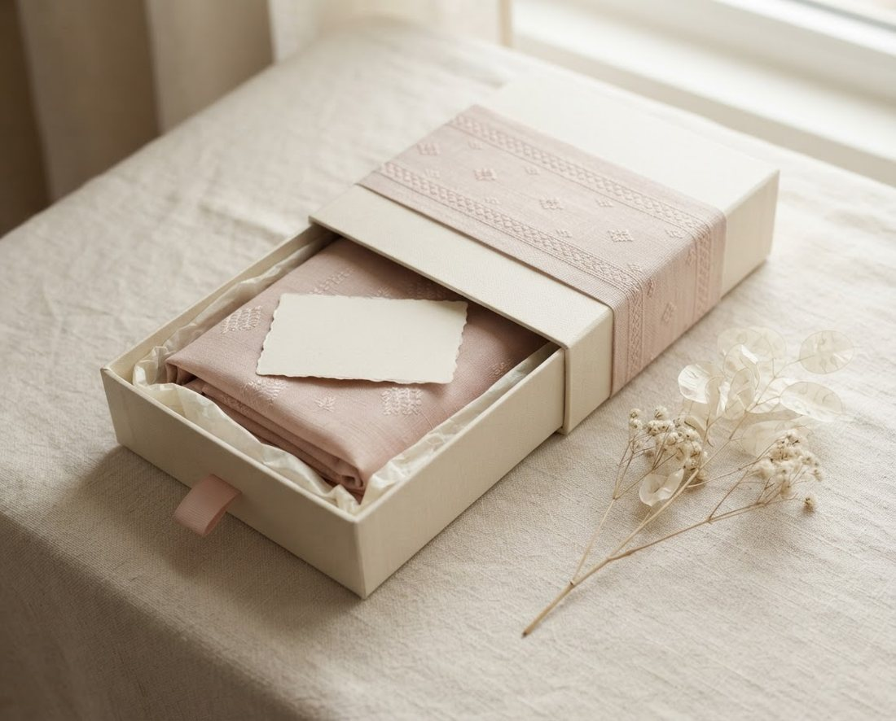
GiftsThe drawer boxAn ivory drawer with a ribbon pull, wrapped in a band of Jamdani cut from our own offcuts.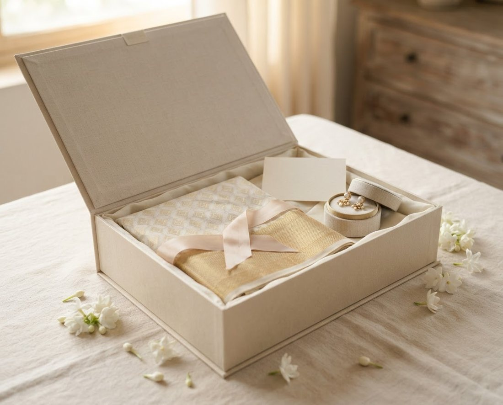
Bridal and akdhThe keepsake boxA hinged, cotton-lined box made to store the saree for years, with room for jewellery.Inside every box is a card filled in by hand. It is our proof of authenticity, and it turns a purchase into a story the customer repeats.
Sort the market by two questions: is it real handloom Jamdani, and is it tailored clothing or only a saree? Three corners are crowded. One is nearly empty.
Lowest price, forgiving on size, giftable, and one saree makes about four. This is how a new customer tries us.
One booking dresses ten to twenty people in matching tones. Large order, planned weeks ahead, paid in advance.
Guests need a new outfit for every wedding and are tired of the same boutique look. Wedding season runs November to February.
One industry estimate says these two festivals make up about three quarters of local fashion sales. We need a small drop for each.
Shirts, kurtis and short panjabis. Slower to build, but it is what makes customers come back between occasions.
Corporate gifts, wedding favours and probashi buyers who want something truly from home. Kotis and pocket squares ship easily.
Our shop from day one. Reports say about 80% of online lifestyle sales in Bangladesh happen through Facebook pages.
Jamdani has to be touched. Wedding fairs, Eid exhibitions and weekend pop-ups in Dhaka.
Planners, photographers and makeup artists meet every family before the akdh. Give them a referral fee.
Send measurements on WhatsApp. Fewer returns, less unsold stock, and a reason to pay more.
66 looks for her and 52 for him, designed for how Bangladesh actually dresses: the office and the campus, Eid and Boishakh, Ekushey and Puja, the holud, the akdh, and a winter of biye baris. Every piece is in a soft, muted colour. Western shapes sit beside the saree, the three-piece, the sharara, the panjabi and the kabli set.
22 of the women's looks are sleeveless, including four sleeveless blouses, and each has a matching sheer cover-up. There is now a full mix-and-match wardrobe as well: blouses, tops, salwars and culottes for her, pajamas, sets and a polo for him. There are fully covered pieces too, including a long coat, a maxi shirt dress and an office kurti that work with a hijab. The menswear now goes past the panjabi: a resort set, a wrap jacket, pleated Jamdani trousers, a long vest, a shawl-collar jacket and a bomber.
A fashion house is remembered for a few pieces it repeats every season in new colours. These are ours.
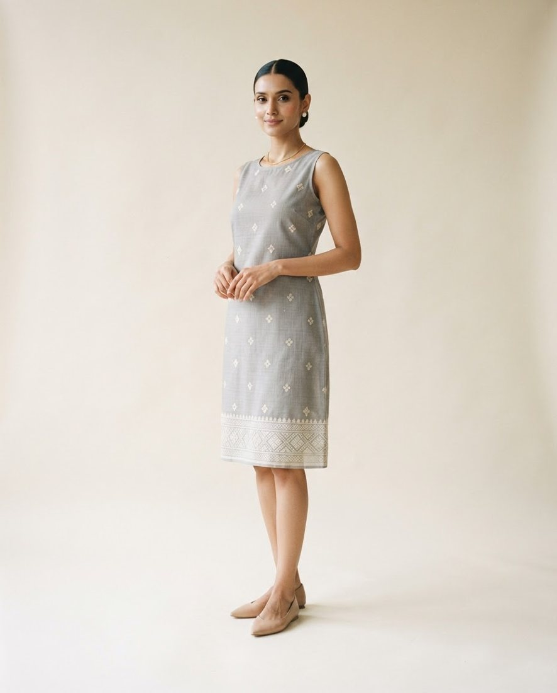
The little dove dressOne soft grey dress that goes with everything.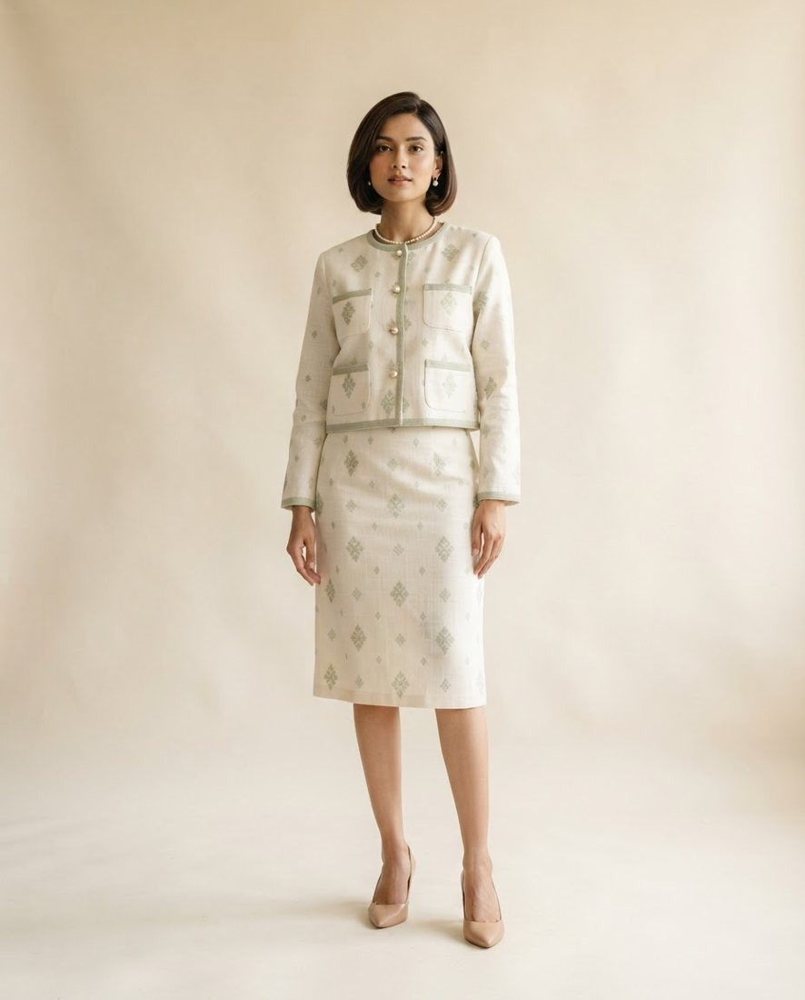
The Dhaka suitCollarless jacket and skirt, with the paar as trim.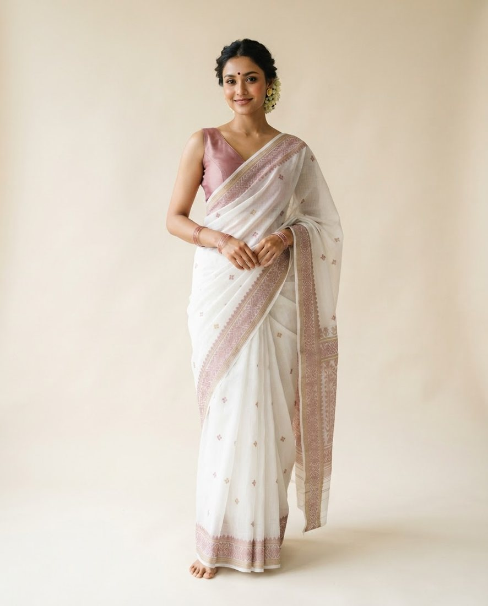
The saree, uncutWe still sell the whole saree, with a blouse cut for today.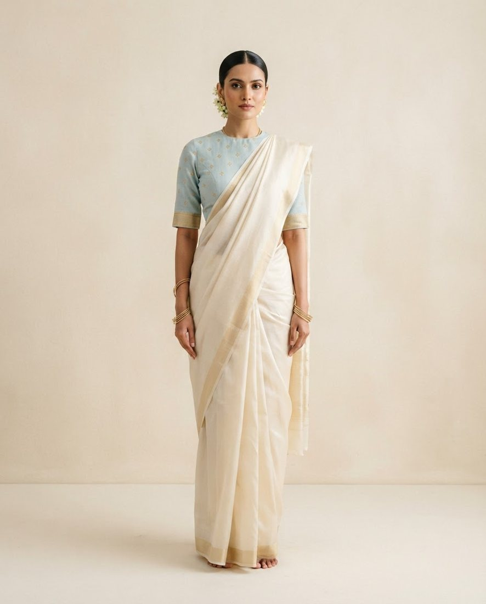
The Jamdani blouseThe entry piece for women who already own sarees.Fashion houses make a few pieces to be photographed and talked about, and many more to be bought. These six are the first kind: a Jamdani trench, a cape gown, a full suit, a denim jacket with a Jamdani back, a bridal robe and a saree with pockets. They earn the attention. The koti, the blouses and the pajamas earn the money.
Couples and families here love to match. Each jora is cut from sarees woven together, so the colour and motif are identical. It doubles the order, and it is something a saree shop cannot offer.
All photographs are AI-generated design concepts, made to show cut, colour and motif placement. They are not finished garments. Replace them with real photographs once samples are stitched.
| Criterion | The options | Our rule |
|---|---|---|
| 1. Occasion | Everyday, festive day, akdh, biye bari | Every piece must work for at least two. |
| 2. Silhouette | Column, A-line, wrap, fit and flare, tiered, sheath, gown, co-ord, jumpsuit | Simple shapes. The cloth is the decoration. |
| 3. Sleeve | Sleeveless, cap, short, full sheer, layered | Every sleeveless piece has a matching cover-up. |
| 4. Neckline | Boat, V, square, halter, mandarin, one shoulder | Necklines are faced in plain cloth so the motifs never distort. |
| 5. Length | Knee, midi, ankle, floor | Midi and ankle first. They suit the most people. |
| 6. Colour | Soft pastels by day, dusk tones for evening | One colour per piece. Motif thread is tonal or metallic, never loud. |
| 7. Motif | Duria, butidar, tercha, jhalar | Small motifs near the face, larger ones toward the hem. |
| 8. Border | Hem, waistband, placket, front edge, cape edge | The paar always has a job. It is never cut away. |
| 9. Lining | Full slip, bodice only, unlined dense weave | Nothing is see-through unless it is meant to be a layer. |
| 10. Fit | Ties, wraps, elastic back, side zips | Each size should forgive five centimetres either way. |
| 11. Cloth use | A quarter, half, one or one and a half sarees | Pattern pieces are planned so offcuts become kotis and trims. |
| 12. Wear again | Restyle with a koti, a belt or a duster | The three-wedding test: if it cannot be worn three times, we do not make it. |
Under Tk 5,000. Koti, pocket squares, potli bags. The first purchase.
Tk 6,000 to 9,000. Day dresses, shirts, panjabis, the long koti.
Tk 10,000 to 16,000. Akdh pieces, co-ords, maxis and layered sets.
Tk 18,000 to 28,000. Gowns in finer Jamdani, made to order.
Price bands are illustrative, like the cost figures below.
Buy at the Friday dawn haats in Noapara (the BSCIC Jamdani village) and Demra, then commission yardage directly from three or four weaver families.
Plan each cut around the cloth: the paar becomes a hem or placket, the anchal becomes a koti front, the body becomes shirts and kurtis.
Jamdani is sheer and loosely woven. Every piece is lined, seams are bound, and sizes are tested on real people.
Each piece carries a card naming the weaver, the village and the days it took. That card is our proof against machine-made copies.
Nothing woven by hand is thrown away. Offcuts become koti trims, potli bags, pocket squares and hair ties, which also gives us gift items under Tk 1,000.
These figures are illustrative. They assume a mid-range cotton handloom Jamdani saree bought at about Tk 6,000 and about 5.5 metres long. Replace them with real haat and tailor quotes before you present.
| Piece | From one saree | Fabric | Lining and making | Cost | Price | Margin |
|---|---|---|---|---|---|---|
| Koti | 4 pieces | 1,500 | 700 | 2,200 | 4,500 | 51% |
| Panjabi | 2 pieces | 3,000 | 900 | 3,900 | 7,500 | 48% |
| Kurti or shirt | 2 pieces | 3,000 | 800 | 3,800 | 6,500 | 42% |
| Midi dress, fully lined | 2 pieces | 3,000 | 1,400 | 4,400 | 8,500 | 48% |
| Statement piece (finer Tk 12,000 saree) | 1 piece | 12,000 | 2,500 | 14,500 | 22,000 | 34% |
| Item | Detail | Taka |
|---|---|---|
| Fabric | 13 sarees at 6,000 and 4 finer sarees at 12,000 | 126,000 |
| Lining and tailoring | 20 kotis, 8 panjabis, 8 kurtis and shirts, 4 statement pieces | 37,600 |
| Photoshoot, packaging, page ads | 25,000 + 8,000 + 20,000 | 53,000 |
| Samples and contingency | 15% of the above | 32,500 |
| Money needed | About Tk 2.5 lakh | 249,100 |
| Sales if all 40 sell at full price | 90,000 + 60,000 + 52,000 + 88,000 | 290,000 |
Where dresses fit: the capsule below leads with the koti because it sells fastest and needs the least cloth. Dresses are the second drop, once there is a customer list, and they are what the photographs and the brand will be known for.
Read this honestly: the first capsule roughly pays for itself and leaves about Tk 41,000. Its real job is to prove people will buy, and to leave us with photographs, a customer list and tested patterns. Profit comes from the second run, when the one-time costs are gone and the product margin is about 44%.
Three Friday visits to Noapara and Demra. Choose weavers. Buy ten sarees and order yardage.
Stitch twelve styles. Fit them on five real people. Fix lining and sizing.
Photoshoot. Open the Facebook and Instagram pages. Take koti pre-orders.
First pop-up. Deliver wedding orders. Book the first akdh family sets.
We cut mid-range sarees and commissioned yardage, never heirloom pieces, and every offcut is used. The weaver earns more when the cloth is bought more often.
Handloom only. Each piece has a weaver card, and we show customers how to check the back of the cloth themselves.
Every piece is fully lined with bound seams, and comes with a care card. We repair our own pieces.
A few small labels make Jamdani fusion for women. Almost nobody serves men, family sets or the koti as a hero product. That is our space.
The koti and the small accessories keep the entry price low. A statement piece is still far below bespoke bridal prices.
Handloom is slow, so we sell in small numbered drops and pre-orders. Scarcity is part of the appeal.
Every sleeveless dress is sold with a matching sheer shrug, cape or duster. One design serves both customers, and the layer is an extra sale.
Kameez sets are everywhere. A lined Jamdani dress is rare, photographs beautifully, and suits buyers abroad as well as at home.
It buys 17 sarees from Rupganj weavers, pays for lining and tailoring of 40 pieces, and covers the first photoshoot and launch. In return we offer a share or a repayment plan, to be agreed with you.
Wear the heritage. Don't store it.
Handwoven in Rupganj. Cut for the days you actually live.
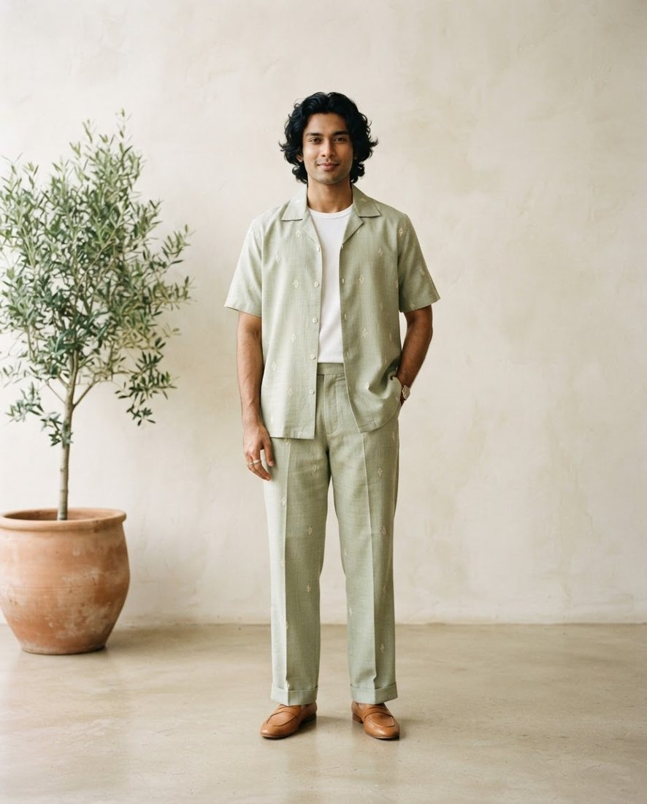
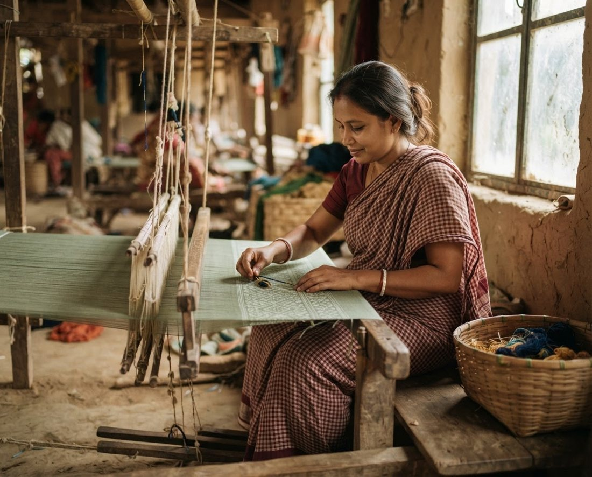
Every motif on your piece was placed by hand, one thread at a time, on a loom beside the Shitalakshya.
Sokhina is the name of the woman at the loom, and of every weaver whose name was never put on a label. We put it on ours. Inside each box is a card with the name of the person who wove your cloth, their village, and the number of days it took.
Jamdani is fine cotton muslin with each motif added by hand as the cloth is woven. One length can take weeks. UNESCO lists the craft as cultural heritage, and the name belongs to Bangladesh.
Three checks you can do yourself. Turn it over: the back is almost as neat as the front. Look closely: no two butis are perfectly alike. Read the card: it names the weaver.
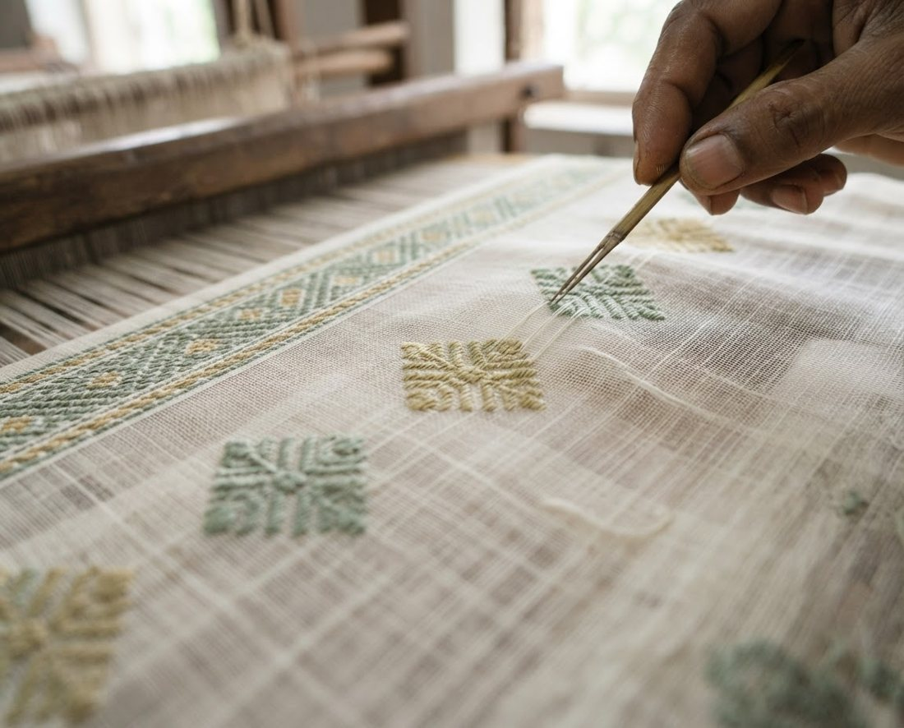
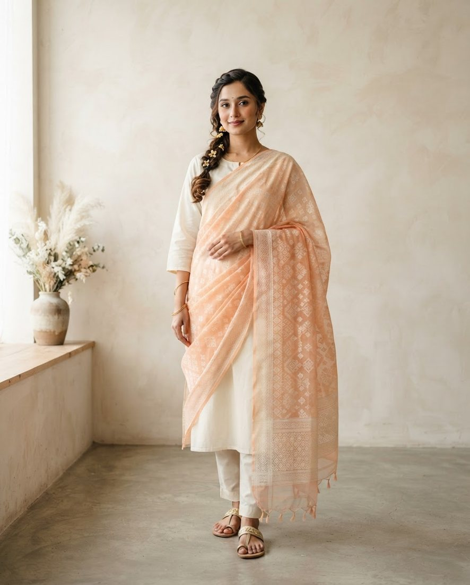
The Sokhina ornaOne orna over the three-piece you already own.Every sleeveless piece comes with a matching sheer cover-up if you want one. Every piece is lined.
From a campus fatua to the akdh sherwani, with a few things he has not seen in Jamdani before.
A jora is his and hers, made from sarees woven together so the colour and motif match exactly. Ask us about sets for the whole family.
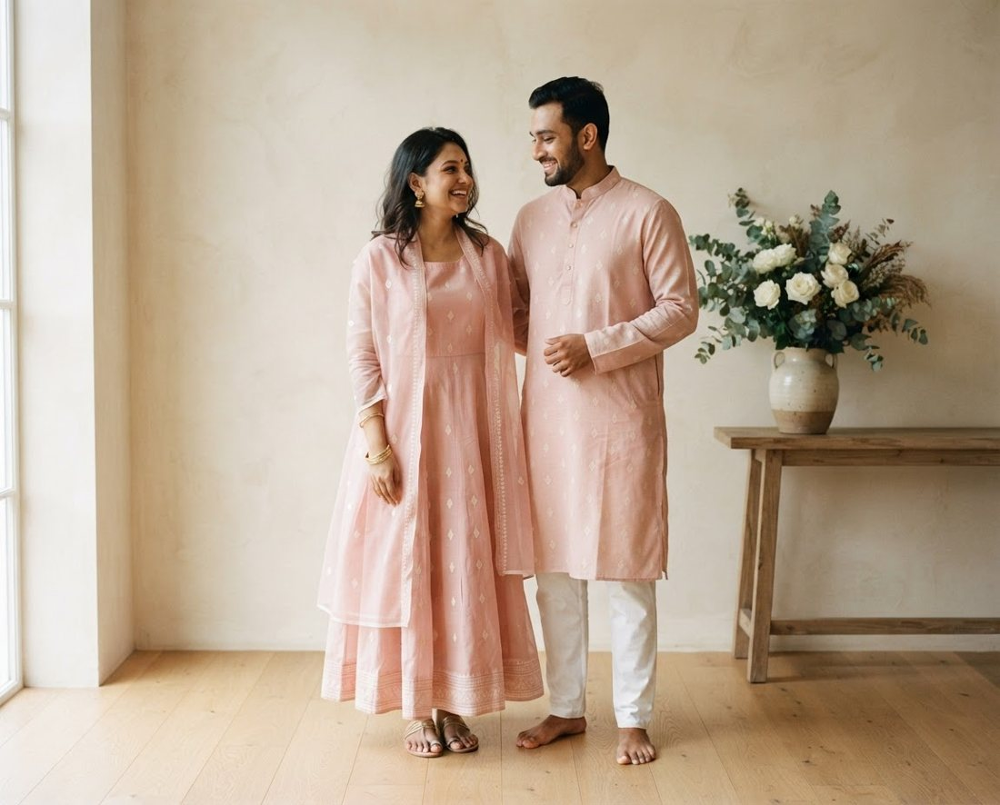
Jora / Petal blush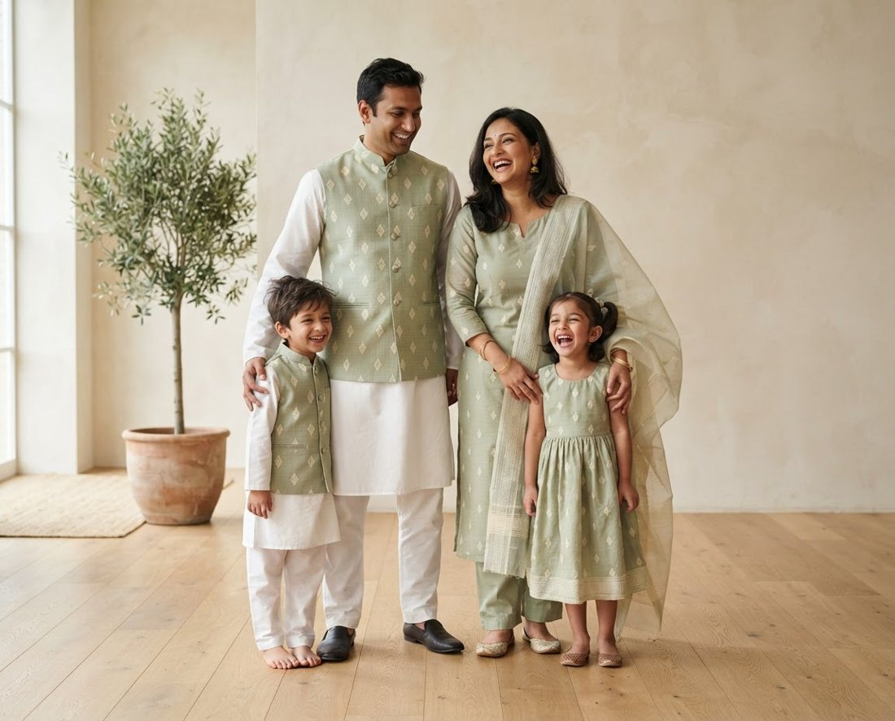
Family set / SageChildren's pieces are cut from the same cloth as their parents', fully lined in soft cotton.
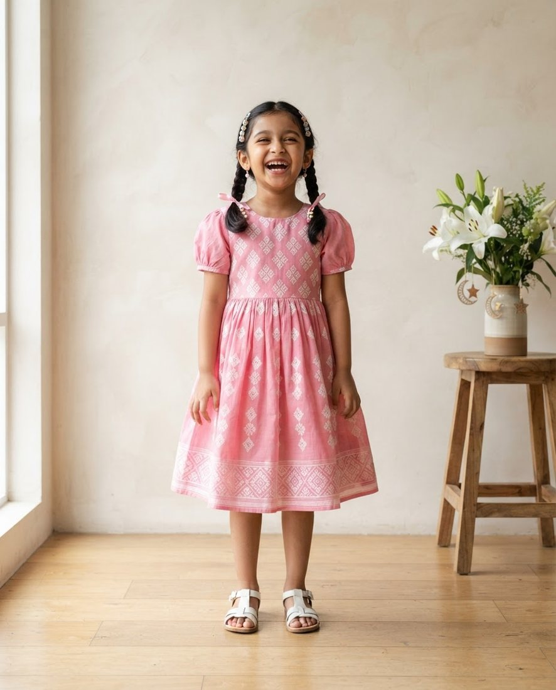
C01 / Golap pink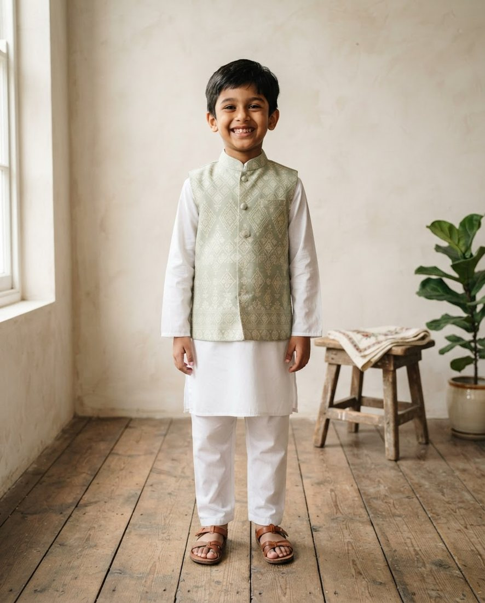
C02 / Sage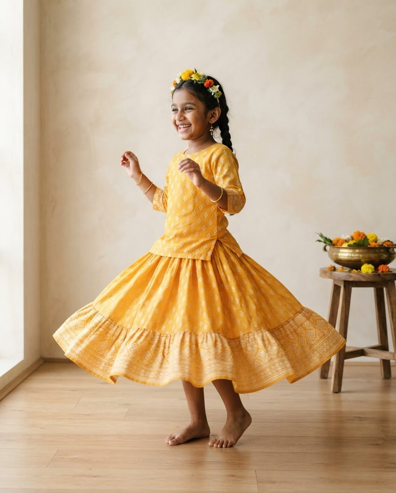
C03 / Marigold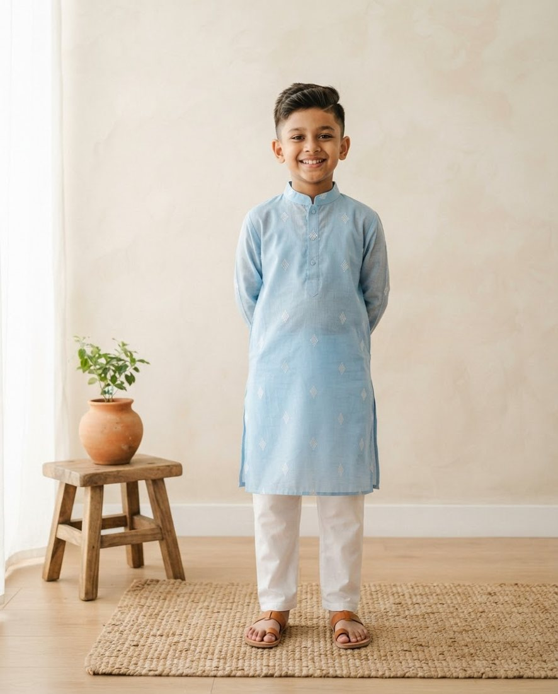
C04 / Powder sky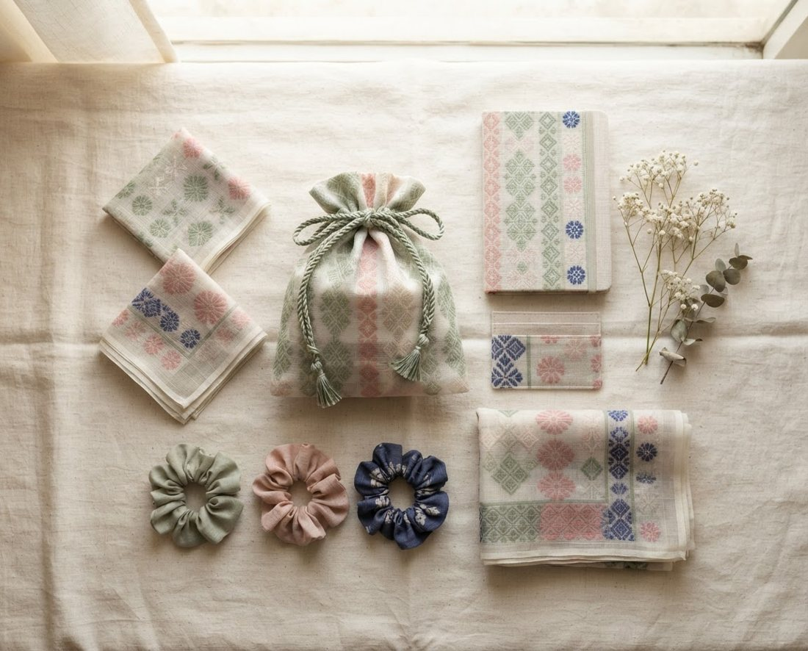
Every offcut becomes something small: potli bags, pocket squares, hair ties, covered notebooks and card holders. They make good gifts, wedding favours and corporate presents, and they let anyone own a piece of Jamdani.
| Women | Bust | Waist | Hip |
|---|---|---|---|
| S | 34 in | 28 in | 37 in |
| M | 36 in | 30 in | 39 in |
| L | 38 in | 32 in | 41 in |
| XL | 40 in | 34 in | 43 in |
| XXL | 42 in | 36 in | 45 in |
| Men | Chest | Panjabi length | Koti length |
|---|---|---|---|
| S | 38 in | 40 in | 25 in |
| M | 40 in | 42 in | 26 in |
| L | 42 in | 44 in | 27 in |
| XL | 44 in | 46 in | 28 in |
| XXL | 46 in | 46 in | 29 in |
Draft size chart. Confirm every measurement with your pattern master before printing. Made to measure is available on every piece.
Every order comes boxed, with a card naming the weaver.
Dhaka, Bangladesh.
To add before printing: phone and WhatsApp number, Facebook and Instagram page names, and prices for each look.
Images are design concepts generated with AI. Your piece is cut from handwoven cloth, so the motifs on it will be its own.